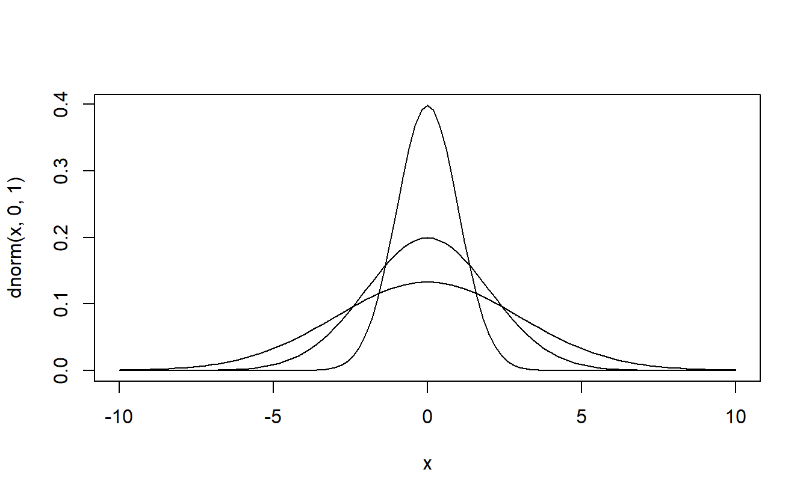
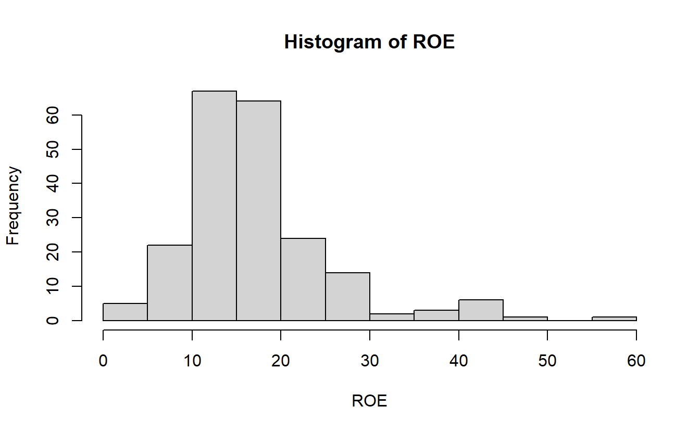
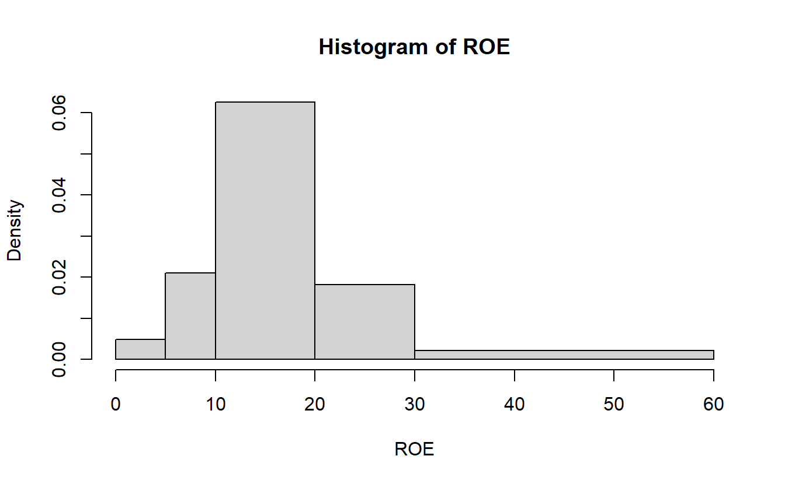
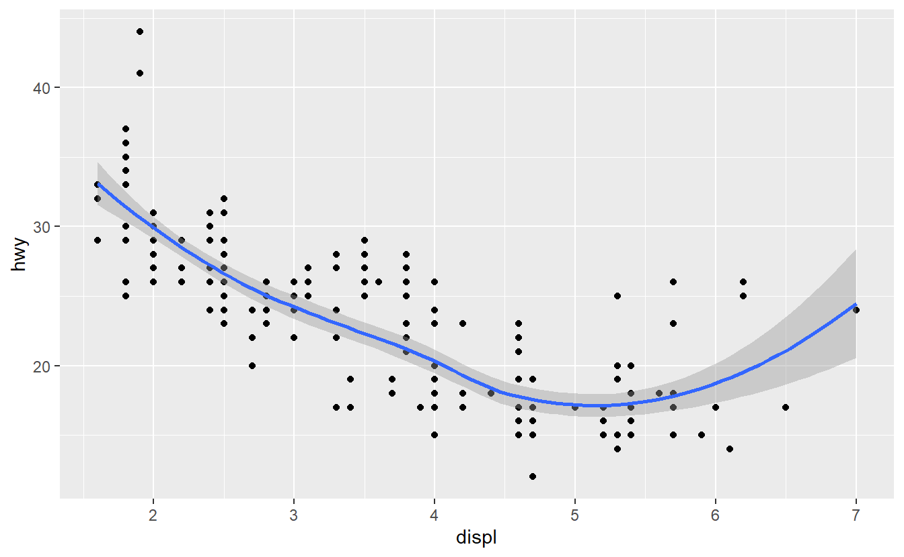

install.packages("wooldridge")
install.packages("rio")
# more
install.packages("WDI")
install.packages("dplyr")
install.packages("ggplot")
練習資料的幾種載入資料的方法
data(affairs, package='wooldridge')
# Version 2: Adjust path
affairs2 <- rio::import("~/data/wooldridge/affairs.dta")
# Version 3: Change working directory
setwd("~/data/wooldridge")
affairs3 <- rio::import("affairs.dta")
# Version 4: directly load from internet
affairs4 <- rio::import("http://fmwww.bc.edu/ec-p/data/wooldridge/affairs.dta")
以套件載入為例
data(affairs, package='wooldridge')
# 計算平均
mean(affairs$naffairs)
#> [1] 1.455907
一般資料處理 - 讀、轉、算、寫
# Define one x vector for all:
year <- c(2008,2009,2010,2011,2012,2013)
# Define a matrix of y values:
product1<-c(0,3,6,9,7,8); product2<-c(1,2,3,5,9,6); product3<-c(2,4,4,2,3,2)
sales_mat <- cbind(product1,product2,product3)
rownames(sales_mat) <- year
# The matrix looks like this:
sales_mat
#> product1 product2 product3
#> 2008 0 1 2
#> 2009 3 2 4
#> 2010 6 3 4
#> 2011 9 5 2
#> 2012 7 9 3
#> 2013 8 6 2
# Create a data frame and display it:
sales <- as.data.frame(sales_mat)
sales
#> product1 product2 product3
#> 2008 0 1 2
#> 2009 3 2 4
#> 2010 6 3 4
#> 2011 9 5 2
#> 2012 7 9 3
#> 2013 8 6 2
# save data frame as RData file (in the current working directory)
save(sales, file = "oursalesdata.RData")
# remove data frame "sales" from memory
rm(sales)
# Does variable "sales" exist?
exists("sales")
#> [1] FALSE
# Load data set (in the current working directory):
load("oursalesdata.RData")
# Does variable "sales" exist?
exists("sales")
#> [1] TRUE
sales
#> product1 product2 product3
#> 2008 0 1 2
#> 2009 3 2 4
#> 2010 6 3 4
#> 2011 9 5 2
#> 2012 7 9 3
#> 2013 8 6 2
# averages of the variables:
colMeans(sales)
#> product1 product2 product3
#> 5.500000 4.333333 2.833333
basic statistic
1 - pnorm(2,4,3) + pnorm(-2,4,3)
#> [1] 0.7702576
# Using the transformation:
pnorm(2/3) - pnorm(-2/3)
#> [1] 0.4950149
# Working directly with the distribution of X:
pnorm(6,4,3) - pnorm(2,4,3)
#> [1] 0.4950149
table
# load data set
data(affairs, package='wooldridge')
# Generate "Factors" to attach labels
haskids <- factor(affairs$kids,labels=c("no","yes"))
mlab <- c("very unhappy","unhappy","average","happy", "very happy")
marriage <- factor(affairs$ratemarr, labels=mlab)
# Frequencies for having kids:
table(haskids)
#> haskids
#> no yes
#> 171 430
# Marriage ratings (share):
prop.table(table(marriage))
#> marriage
#> very unhappy unhappy average happy very happy
#> 0.0266223 0.1098170 0.1547421 0.3227953 0.3860233
# Contigency table: counts (display & store in var.)
(countstab <- table(marriage,haskids))
#> haskids
#> marriage no yes
#> very unhappy 3 13
#> unhappy 8 58
#> average 24 69
#> happy 40 154
#> very happy 96 136
# Share within "marriage" (i.e. within a row):
prop.table(countstab, margin=1)
#> haskids
#> marriage no yes
#> very unhappy 0.1875000 0.8125000
#> unhappy 0.1212121 0.8787879
#> average 0.2580645 0.7419355
#> happy 0.2061856 0.7938144
#> very happy 0.4137931 0.5862069
# Share within "haskids" (i.e. within a column):
prop.table(countstab, margin=2)
#> haskids
#> marriage no yes
#> very unhappy 0.01754386 0.03023256
#> unhappy 0.04678363 0.13488372
#> average 0.14035088 0.16046512
#> happy 0.23391813 0.35813953
#> very happy 0.56140351 0.31627907
data frame
# Define one x vector for all:
year <- c(2008,2009,2010,2011,2012,2013)
# Define a matrix of y values:
product1<-c(0,3,6,9,7,8); product2<-c(1,2,3,5,9,6); product3<-c(2,4,4,2,3,2)
sales_mat <- cbind(product1,product2,product3)
rownames(sales_mat) <- year
# The matrix looks like this:
sales_mat
#> product1 product2 product3
#> 2008 0 1 2
#> 2009 3 2 4
#> 2010 6 3 4
#> 2011 9 5 2
#> 2012 7 9 3
#> 2013 8 6 2
# Create a data frame and display it:
sales <- as.data.frame(sales_mat)
sales
#> product1 product2 product3
#> 2008 0 1 2
#> 2009 3 2 4
#> 2010 6 3 4
#> 2011 9 5 2
#> 2012 7 9 3
#> 2013 8 6 2
練習 Wdi
library(WDI)
wdi_raw <- WDI(indicator=c("SP.DYN.LE00.FE.IN"),
start = 1960, end = 2014) # 🏷WDI 是一個函數,wdi_raw是一個data.frame
# 不要直接顯示所有資料,太長
head(wdi_raw,n=10)
#> iso2c country SP.DYN.LE00.FE.IN year
#> 1 ZH Africa Eastern and Southern 63.74479 2014
#> 2 ZH Africa Eastern and Southern 63.01116 2013
#> 3 ZH Africa Eastern and Southern 62.19697 2012
#> 4 ZH Africa Eastern and Southern 61.31294 2011
#> 5 ZH Africa Eastern and Southern 60.37721 2010
#> 6 ZH Africa Eastern and Southern 59.40726 2009
#> 7 ZH Africa Eastern and Southern 58.42882 2008
#> 8 ZH Africa Eastern and Southern 57.47517 2007
#> 9 ZH Africa Eastern and Southern 56.57331 2006
#> 10 ZH Africa Eastern and Southern 55.75485 2005
#tail(wdi_raw)
descriptive statistics
data(ceosal1, package='wooldridge') # class(ceosal1) = data.frame
# sample average:
mean(ceosal1$salary)
#> [1] 1281.12
# sample median:
median(ceosal1$salary)
#> [1] 1039
#standard deviation:
sd(ceosal1$salary)
#> [1] 1372.345
# summary information:
summary(ceosal1$salary)
#> Min. 1st Qu. Median Mean 3rd Qu. Max.
#> 223 736 1039 1281 1407 14822
# correlation with ROE:
cor(ceosal1$salary, ceosal1$roe)
#> [1] 0.1148417
t檢定
# data for the scrap rates examples:
SR87<-c(10,1,6,.45,1.25,1.3,1.06,3,8.18,1.67,.98,1,.45,5.03,8,9,18,.28, 7,3.97)
SR88<-c(3,1,5,.5,1.54,1.5,.8,2,.67,1.17,.51,.5,.61,6.7,4,7,19,.2,5,3.83)
Change <- SR88 - SR87
# Ingredients to CI formula
(avgCh<- mean(Change)) # Change的平均
#> [1] -1.1545
(n <- length(Change))
#> [1] 20
(sdCh <- sd(Change)) # Change的標準差
#> [1] 2.400639
(se <- sdCh/sqrt(n)) # 標準誤
#> [1] 0.5367992
(c <- qt(.975, n-1)) #quantile of t dist
#> [1] 2.093024
# avgCh的95%信賴區間
c( avgCh - c*se, avgCh + c*se )
#> [1] -2.27803369 -0.03096631
# t statistic for H0: mu=0:
(t <- avgCh/se)
#> [1] -2.150711
# p value
(p <- pt(t,n-1)) # 🏷 p(probability機率) ➕ t分配 = pt
#> [1] 0.02229063
或是直接使用函數,對照如下
# two-sided CI
t.test(Change)
#>
#> One Sample t-test
#>
#> data: Change
#> t = -2.1507, df = 19, p-value = 0.04458
#> alternative hypothesis: true mean is not equal to 0
#> 95 percent confidence interval:
#> -2.27803369 -0.03096631
#> sample estimates:
#> mean of x
#> -1.1545
# 1-sided test:
t.test(Change, alternative="less")
#>
#> One Sample t-test
#>
#> data: Change
#> t = -2.1507, df = 19, p-value = 0.02229
#> alternative hypothesis: true mean is less than 0
#> 95 percent confidence interval:
#> -Inf -0.2263028
#> sample estimates:
#> mean of x
#> -1.1545
練習範例
data(audit, package='wooldridge')
# two-sided CI
t.test(audit$y)
# 1-sided test:
t.test(audit$y, alternative="less")
信賴區間
data(audit, package='wooldridge')
# Ingredients to CI formula
(avgy<- mean(audit$y))
#> [1] -0.1327801
(n <- length(audit$y))
#> [1] 241
(sdy <- sd(audit$y))
#> [1] 0.4819709
(se <- sdy/sqrt(n))
#> [1] 0.03104648
(c <- qnorm(.975)) # 🏷q ➕ 常態(norm) = qnorm
#> [1] 1.959964
# 95% Confidence intervall:
avgy + c * c(-se,+se)
#> [1] -0.19363006 -0.07193011
# 99% Confidence intervall:
avgy + qnorm(.995) * c(-se,+se)
#> [1] -0.21275051 -0.05280966
# t statistic for H0: mu=0:
(t <- avgy/se) #-4.276816
#> [1] -4.276816
# p value
(p <- pt(t,240))
#> [1] 1.369271e-05
# Critical values for t distribution with n-1=240 d.f.:
alpha.one.tailed = c(0.1, 0.05, 0.025, 0.01, 0.005, .001)
CV <- qt(1 - alpha.one.tailed, n-1) # 🏷q ➕ t分配 = qt
cbind(alpha.one.tailed, CV)
#> alpha.one.tailed CV
#> [1,] 0.100 1.285089
#> [2,] 0.050 1.651227
#> [3,] 0.025 1.969898
#> [4,] 0.010 2.341985
#> [5,] 0.005 2.596469
#> [6,] 0.001 3.124536
plot
basic plot
curve(dnorm(x,0,1),-10,10,lwd=1,lty=1)
curve(dnorm(x,0,2),-10,10,add=TRUE,lwd=1,lty=1) #🏷疊圖
curve(dnorm(x,0,3),-10,10,add=TRUE,lwd=1,lty=1)

histogram
data(ceosal1, package='wooldridge')
# Extract ROE to single vector
ROE <- ceosal1$roe
# Subfigure (a): histogram (counts)
hist(ROE)
# Subfigure (b): histogram (densities, explicit breaks)
hist(ROE, breaks=c(0,5,10,20,30,60) )

ggplot2
library(ggplot2)
head(mpg)
#> # A tibble: 6 x 11
#> manufacturer model displ year cyl trans drv cty hwy fl class
#> <chr> <chr> <dbl> <int> <int> <chr> <chr> <int> <int> <chr> <chr>
#> 1 audi a4 1.8 1999 4 auto(l5) f 18 29 p compa~
#> 2 audi a4 1.8 1999 4 manual(m5) f 21 29 p compa~
#> 3 audi a4 2 2008 4 manual(m6) f 20 31 p compa~
#> 4 audi a4 2 2008 4 auto(av) f 21 30 p compa~
#> 5 audi a4 2.8 1999 6 auto(l5) f 16 26 p compa~
#> 6 audi a4 2.8 1999 6 manual(m5) f 18 26 p compa~
ggplot(mpg, aes(displ, hwy)) +
geom_point() +
geom_smooth()
#> `geom_smooth()` using method = 'loess' and formula 'y ~ x'
